Quesito 1. Confezione (tetrapack) da L di latte vaccino (densità –). In base ai dati e alla figura, l’area di base della confezione è: A. minore di · B. pari a · C. maggiore di · D. non si può dire
confezione tetrapack da un litro
Topic: Newtonian Mechanics, Fluid Mechanics, Thermodynamics Metodi: Free-Body Diagram, Energy Conservation Method, Dimensional Analysis Competenze: Physical Reasoning, Graph Linearization, Estimation & Approximation Objects: Container Fonte: Testo (PDF) — p.2
Question 1. Package (tetrapack) from L of cow’s milk (density 1{,}029$$1{,}034\ \text{g/cm}^3). According to the data and the figure, the basic area of the packaging is: A. less than · B. equal to · C. maggiore di · D. You can’t say
- tetrapack pack from one litre*
Topic: Newtonian Mechanics, Fluid Mechanics, Thermodynamics Metodi: Free-Body Diagram, Energy Conservation Method, Dimensional Analysis Competenze: Physical Reasoning, Graph Linearization, Estimation & Approximation Objects: Container Fonte: Testo (PDF) — p.2
Quesito 2. Tre pescatori riportano lunghezze (raccontata/misurata): Alex m, Bea m, Cassie m. Chi “la racconta più grossa” in proporzione? A. Bea, Alex, Cassie · B. Cassie, poi Bea e Alex pari · C. Bea, poi Alex e Cassie pari · D. Cassie, Bea, Alex
Topic: Newtonian Mechanics, Fluid Mechanics, Thermodynamics Metodi: Free-Body Diagram, Energy Conservation Method, Dimensional Analysis Competenze: Physical Reasoning, Graph Linearization, Estimation & Approximation Objects: — Fonte: Testo (PDF) — p.2
Question 2. Three fishermen report lengths (counted/measured): Alex m, Bea m, Cassie m. Who “tells the biggest story” in proportion? A. The Commission has already adopted a number of proposals. Cassie, then Bea and Alex are equal. Bea, then Alex and Cassie are equal. Cassie, Bea, Alex, you know what?
Topic: Newtonian Mechanics, Fluid Mechanics, Thermodynamics Metodi: Free-Body Diagram, Energy Conservation Method, Dimensional Analysis Competenze: Physical Reasoning, Graph Linearization, Estimation & Approximation Objects: — Fonte: Testo (PDF) — p.2
Quesito 3. La carica del protone vale . Quanto valgono le cariche di elettrone e neutrone? (tabella) A. , · B. , · C. , · D. ,
Topic: Newtonian Mechanics, Fluid Mechanics, Thermodynamics Metodi: Free-Body Diagram, Energy Conservation Method, Dimensional Analysis Competenze: Physical Reasoning, Graph Linearization, Estimation & Approximation Objects: Electron Fonte: Testo (PDF) — p.2
The proton charge is . How much are electron and neutron charges worth? (Table) A. , · B. , · C. , · D. ,
Topic: Newtonian Mechanics, Fluid Mechanics, Thermodynamics Metodi: Free-Body Diagram, Energy Conservation Method, Dimensional Analysis Competenze: Physical Reasoning, Graph Linearization, Estimation & Approximation Objects: Electron Fonte: Testo (PDF) — p.2
Quesito 4. Contenitore di massa riempito con di liquido; massa totale . Densità del liquido? A. · B. · C. · D.
Topic: Newtonian Mechanics, Fluid Mechanics, Thermodynamics Metodi: Free-Body Diagram, Energy Conservation Method, Dimensional Analysis Competenze: Physical Reasoning, Graph Linearization, Estimation & Approximation Objects: Container Fonte: Testo (PDF) — p.2
Question 4. ** Mass container filled with liquid; total mass . The density of the liquid? A. · B. · C. · D.
Topic: Newtonian Mechanics, Fluid Mechanics, Thermodynamics Metodi: Free-Body Diagram, Energy Conservation Method, Dimensional Analysis Competenze: Physical Reasoning, Graph Linearization, Estimation & Approximation Objects: Container Fonte: Testo (PDF) — p.2
Quesito 5. Grafico spazio-tempo di un viaggio in autostrada. Velocità media? A. 50 km/h · B. 67 · C. 70 · D. 83
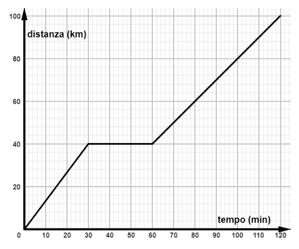
grafico spazio-tempo viaggio autostradaTopic: Newtonian Mechanics, Fluid Mechanics, Thermodynamics Metodi: Free-Body Diagram, Energy Conservation Method, Dimensional Analysis Competenze: Physical Reasoning, Graph Linearization, Estimation & Approximation Objects: — Fonte: Testo (PDF) — p.2
Question 5. The time-space chart of a road trip. What’s the average speed? A. 50 km/h · B. 67 · C. 70 · D. 83
The following is a list of the main road transport modes in the Community:
Topic: Newtonian Mechanics, Fluid Mechanics, Thermodynamics Metodi: Free-Body Diagram, Energy Conservation Method, Dimensional Analysis Competenze: Physical Reasoning, Graph Linearization, Estimation & Approximation Objects: — Fonte: Testo (PDF) — p.2
Quesito 6. Veicolo telecomandato su un pianeta; invia messaggio radio alla sala di controllo a km, che risponde. Tempo minimo tra rilevamento ostacolo e ricezione risposta? A. 8,0 ms · B. 16 ms · C. 8,0 s · D. 16 s
Topic: Newtonian Mechanics, Fluid Mechanics, Thermodynamics Metodi: Free-Body Diagram, Energy Conservation Method, Dimensional Analysis Competenze: Physical Reasoning, Graph Linearization, Estimation & Approximation Objects: Planet Fonte: Testo (PDF) — p.2
Question 6. Remote-controlled vehicle on a planet; sends radio message to the control room at km, which responds. Minimum time between detection of obstacle and response? A. 8,0 ms · B. 16 ms · C. 8,0 s · D. 16 s
Topic: Newtonian Mechanics, Fluid Mechanics, Thermodynamics Metodi: Free-Body Diagram, Energy Conservation Method, Dimensional Analysis Competenze: Physical Reasoning, Graph Linearization, Estimation & Approximation Objects: Planet Fonte: Testo (PDF) — p.2
Quesito 7. Grafico del moto di una persona su strada rettilinea (ovest-est positivo). Quanta strada percorre da est verso ovest nei min? A. 120 m · B. 100 m · C. 50 m · D. 15 m
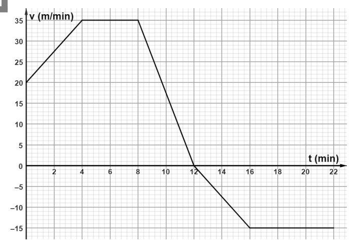
grafico velocità-tempo personaTopic: Newtonian Mechanics, Fluid Mechanics, Thermodynamics Metodi: Free-Body Diagram, Energy Conservation Method, Dimensional Analysis Competenze: Physical Reasoning, Graph Linearization, Estimation & Approximation Objects: — Fonte: Testo (PDF) — p.2
Question 7.Motorcycle chart of a person on a straight road (positive west-east). How many roads do you go east to west in min? A. 120 m · B. 100 m · C. 50 m · D. 15 m
person time and speed chart
Topic: Newtonian Mechanics, Fluid Mechanics, Thermodynamics Metodi: Free-Body Diagram, Energy Conservation Method, Dimensional Analysis Competenze: Physical Reasoning, Graph Linearization, Estimation & Approximation Objects: — Fonte: Testo (PDF) — p.2
Quesito 8. Grafico allungamento-carico di una molla; lunghezza a riposo cm, dopo il carico cm. Peso dell’oggetto appeso? A. 0,0412 N · B. 0,900 · C. 1,60 · D. 13,7
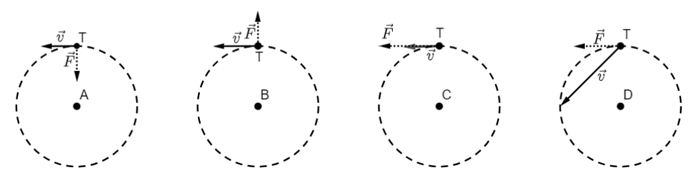
grafico allungamento vs carico mollaTopic: Newtonian Mechanics, Fluid Mechanics, Thermodynamics Metodi: Free-Body Diagram, Energy Conservation Method, Dimensional Analysis Competenze: Physical Reasoning, Graph Linearization, Estimation & Approximation Objects: Spring Fonte: Testo (PDF) — p.2
Question 8. Charge length of a spring; rest length cm, after the load cm. Weight of the hanging object? A. 0,0412 N · B. 0,900 · C. 1,60 · D. The Commission has decided to adopt a proposal for a regulation on the common position of the European Parliament and of the Council. graph lengthening vs spring load
Topic: Newtonian Mechanics, Fluid Mechanics, Thermodynamics Metodi: Free-Body Diagram, Energy Conservation Method, Dimensional Analysis Competenze: Physical Reasoning, Graph Linearization, Estimation & Approximation Objects: Spring Fonte: Testo (PDF) — p.2
Quesito 9. Carrello di con accelerazione spinto con forza orizzontale . Forza d’attrito? A. 5,0 N · B. 20 · C. 30 · D. 45
Topic: Newtonian Mechanics, Fluid Mechanics, Thermodynamics Metodi: Free-Body Diagram, Energy Conservation Method, Dimensional Analysis Competenze: Physical Reasoning, Graph Linearization, Estimation & Approximation Objects: Cart Fonte: Testo (PDF) — p.2
Question 9. ** A gearbox with acceleration pushed by horizontal force . - Tightness? A. 5,0 N · B. 20 · C. 30 · D. 45
Topic: Newtonian Mechanics, Fluid Mechanics, Thermodynamics Metodi: Free-Body Diagram, Energy Conservation Method, Dimensional Analysis Competenze: Physical Reasoning, Graph Linearization, Estimation & Approximation Objects: Cart Fonte: Testo (PDF) — p.2
Quesito 10. Trenino su rotaia circolare a velocità costante . Quale diagramma rappresenta forza delle rotaie e velocità?
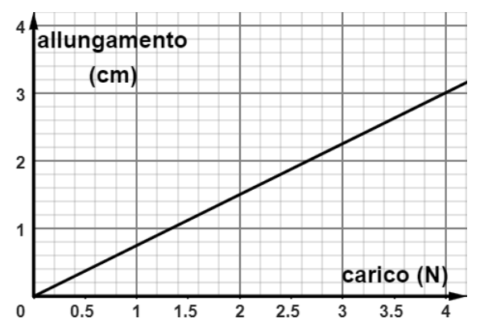
diagrammi forza e velocità moto circolareTopic: Newtonian Mechanics, Fluid Mechanics, Thermodynamics Metodi: Free-Body Diagram, Energy Conservation Method, Dimensional Analysis Competenze: Physical Reasoning, Graph Linearization, Estimation & Approximation Objects: Cart Fonte: Testo (PDF) — p.2
Quesito 10. Trenino su rotaia circolare a velocità costante . What diagram represents the strength and speed of the railways? I’m going to start with this. circular motion force and speed diagrams
Topic: Newtonian Mechanics, Fluid Mechanics, Thermodynamics Metodi: Free-Body Diagram, Energy Conservation Method, Dimensional Analysis Competenze: Physical Reasoning, Graph Linearization, Estimation & Approximation Objects: Cart Fonte: Testo (PDF) — p.2
Quesito 11. Cicogna trasporta una culla lunga cm, massa totale kg, sostenuta da due nastri lunghi cm. Tensione su ciascun nastro? A. 39,2 N · B. 22,7 · C. 19,6 · D. 17,0
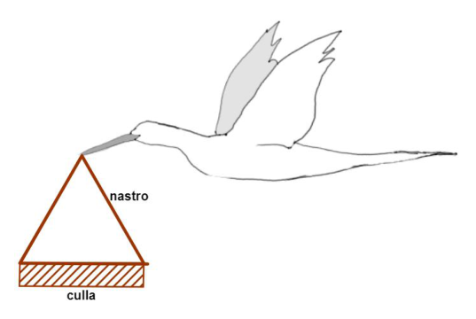
cicogna con culla e nastri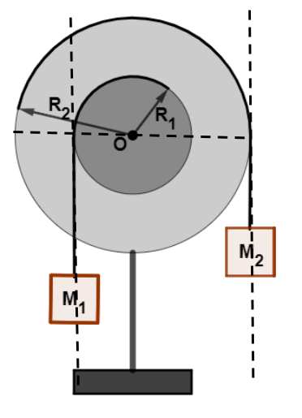
soluzione: cicogna culla nastri schemaTopic: Newtonian Mechanics, Fluid Mechanics, Thermodynamics Metodi: Free-Body Diagram, Energy Conservation Method, Dimensional Analysis Competenze: Physical Reasoning, Graph Linearization, Estimation & Approximation Objects: String Fonte: Testo (PDF) — p.2
Question 11. The Cuckoo carries a crib length cm, total mass kg, supported by two tapes length cm. Tensions on each tape? A. 39,2 N · B. 22,7 · C. 19,6 · D. 17,0
chicken with crib and tape
The following table shows the results of the evaluation:
Topic: Newtonian Mechanics, Fluid Mechanics, Thermodynamics Metodi: Free-Body Diagram, Energy Conservation Method, Dimensional Analysis Competenze: Physical Reasoning, Graph Linearization, Estimation & Approximation Objects: String Fonte: Testo (PDF) — p.2
Quesito 12. Due dischi di raggi solidali e coassiali, con masse appese a fili (pulegge). Condizione di equilibrio? A. · B. · C. · D.
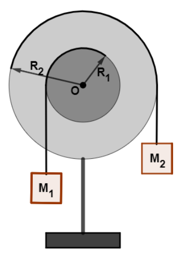
sistema due dischi e masse appeseTopic: Newtonian Mechanics, Fluid Mechanics, Thermodynamics Metodi: Free-Body Diagram, Energy Conservation Method, Dimensional Analysis Competenze: Physical Reasoning, Graph Linearization, Estimation & Approximation Objects: Disk, String, Pulley Fonte: Testo (PDF) — p.2
Quesito 12. Due dischi di raggi solidali e coassiali, con masse appese a fili (pulegge). What’s the balance? A. · B. · C. · D. two-disc system and suspended masses
Topic: Newtonian Mechanics, Fluid Mechanics, Thermodynamics Metodi: Free-Body Diagram, Energy Conservation Method, Dimensional Analysis Competenze: Physical Reasoning, Graph Linearization, Estimation & Approximation Objects: Disk, String, Pulley Fonte: Testo (PDF) — p.2
Quesito 13. Due astronauti di massa diversa “galleggiano” in una stazione geostazionaria. Affermazione corretta? A. nessuna forza · B. forza centrifuga uguale · C. forza gravitazionale verso il centro, modulo diverso · D. forza gravitazionale, modulo uguale
Topic: Newtonian Mechanics, Fluid Mechanics, Thermodynamics Metodi: Free-Body Diagram, Energy Conservation Method, Dimensional Analysis Competenze: Physical Reasoning, Graph Linearization, Estimation & Approximation Objects: Satellite Fonte: Testo (PDF) — p.2
Question 13. Two astronauts of different mass are “floating” in a geostationary station. Is that correct? A. No force · B. The maximum power output of the vehicle shall be: gravitational force towards the centre, different shape · D. Gravitational force, equal to the modulus
Topic: Newtonian Mechanics, Fluid Mechanics, Thermodynamics Metodi: Free-Body Diagram, Energy Conservation Method, Dimensional Analysis Competenze: Physical Reasoning, Graph Linearization, Estimation & Approximation Objects: Satellite Fonte: Testo (PDF) — p.2
Quesito 14. Torre di caduta libera; confronta energia potenziale (posizione B) con (posizione A, tripla altezza). A. · B. · C. · D.
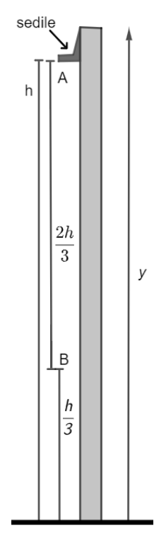
torre caduta libera con posizioni A e B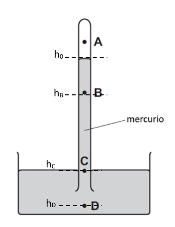
soluzione: torre caduta libera quote hTopic: Newtonian Mechanics, Fluid Mechanics, Thermodynamics Metodi: Free-Body Diagram, Energy Conservation Method, Dimensional Analysis Competenze: Physical Reasoning, Graph Linearization, Estimation & Approximation Objects: — Fonte: Testo (PDF) — p.2
Quesito 14. Torre di caduta libera; confronta energia potenziale (posizione B) con (posizione A, tripla altezza). A. · B. · C. · D. *free fall tower with positions A and B *
soluzione: torre caduta libera quote h
Topic: Newtonian Mechanics, Fluid Mechanics, Thermodynamics Metodi: Free-Body Diagram, Energy Conservation Method, Dimensional Analysis Competenze: Physical Reasoning, Graph Linearization, Estimation & Approximation Objects: — Fonte: Testo (PDF) — p.2
Quesito 15. Stessa torre: quale grafico traduce la relazione energia meccanica -tempo tra A e B (assenza di attrito)?
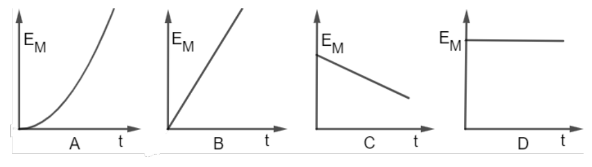
grafici energia meccanica vs tempo A-DTopic: Newtonian Mechanics, Fluid Mechanics, Thermodynamics Metodi: Free-Body Diagram, Energy Conservation Method, Dimensional Analysis Competenze: Physical Reasoning, Graph Linearization, Estimation & Approximation Objects: — Fonte: Testo (PDF) — p.2
Quesito 15. Stessa torre: quale grafico traduce la relazione energia meccanica -tempo tra A e B (assenza di attrito)? I’m going to start with this. grafici energia meccanica vs tempo A-D
Topic: Newtonian Mechanics, Fluid Mechanics, Thermodynamics Metodi: Free-Body Diagram, Energy Conservation Method, Dimensional Analysis Competenze: Physical Reasoning, Graph Linearization, Estimation & Approximation Objects: — Fonte: Testo (PDF) — p.2
Quesito 16. Quattro sfere di uguale volume e massa diversa lasciate cadere da altezze diverse. Quale ha energia cinetica maggiore all’impatto (attrito trascurabile)? [A:5 kg da 1 m, B:4 kg da 2 m, C:3 kg da 3 m, D:2 kg da 4 m]
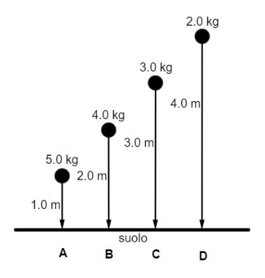
sfere di diversa massa ad altezze diverseTopic: Newtonian Mechanics, Fluid Mechanics, Thermodynamics Metodi: Free-Body Diagram, Energy Conservation Method, Dimensional Analysis Competenze: Physical Reasoning, Graph Linearization, Estimation & Approximation Objects: Sphere Fonte: Testo (PDF) — p.2
Question 16. Four spheres of equal volume and different mass dropped from different heights. Which has the greatest kinetic energy at impact (negligible friction)? [A:5 kg da 1 m, B:4 kg da 2 m, C:3 kg da 3 m, D:2 kg da 4 m]
spheres of different mass at different heights
Topic: Newtonian Mechanics, Fluid Mechanics, Thermodynamics Metodi: Free-Body Diagram, Energy Conservation Method, Dimensional Analysis Competenze: Physical Reasoning, Graph Linearization, Estimation & Approximation Objects: Sphere Fonte: Testo (PDF) — p.2
Quesito 17. Barometro a mercurio: in quale punto la pressione è maggiore di quella atmosferica?
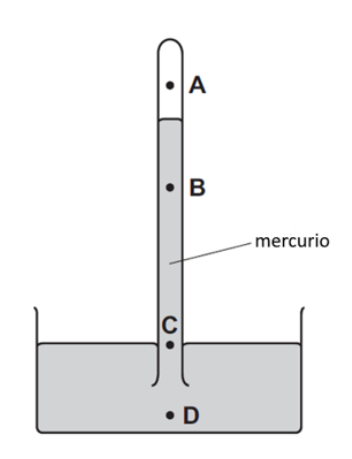
barometro a mercurio con punti A-DTopic: Newtonian Mechanics, Fluid Mechanics, Thermodynamics Metodi: Free-Body Diagram, Energy Conservation Method, Dimensional Analysis Competenze: Physical Reasoning, Graph Linearization, Estimation & Approximation Objects: Manometer Fonte: Testo (PDF) — p.2
Question 17. Mercury barometer: at what point is the pressure greater than the atmospheric pressure? I’m going to start with this. *mercury barometer with A-D points *
Topic: Newtonian Mechanics, Fluid Mechanics, Thermodynamics Metodi: Free-Body Diagram, Energy Conservation Method, Dimensional Analysis Competenze: Physical Reasoning, Graph Linearization, Estimation & Approximation Objects: Manometer Fonte: Testo (PDF) — p.2
Quesito 18. Granelli di polline in acqua osservati al microscopio scompaiono casualmente. A cosa è dovuto il movimento? A. evaporazione · B. urti delle molecole d’acqua (moto browniano) · C. urti tra granelli · D. illuminazione laterale
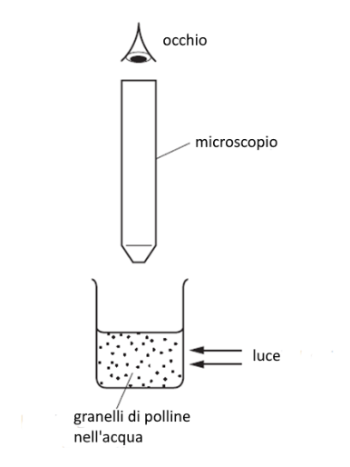
microscopio e contenitore granelli pollineTopic: Newtonian Mechanics, Fluid Mechanics, Thermodynamics Metodi: Free-Body Diagram, Energy Conservation Method, Dimensional Analysis Competenze: Physical Reasoning, Graph Linearization, Estimation & Approximation Objects: — Fonte: Testo (PDF) — p.2
Question 18. Microscopically observed pollen grains in water disappear by chance. What was the cause of the movement? A. Evaporation · B. The following is a list of the types of water molecules: The following table shows the results of the tests: side lighting
microscope and container of pollen grains
Topic: Newtonian Mechanics, Fluid Mechanics, Thermodynamics Metodi: Free-Body Diagram, Energy Conservation Method, Dimensional Analysis Competenze: Physical Reasoning, Graph Linearization, Estimation & Approximation Objects: — Fonte: Testo (PDF) — p.2
Quesito 19. Due esperimenti di conduzione del calore in metalli; cosa succede usando metalli a maggiore conducibilità (lunghezza cera rimasta / tempo caduta puntina)? A. maggiore/minore · B. maggiore/maggiore · C. minore/minore · D. minore/maggiore
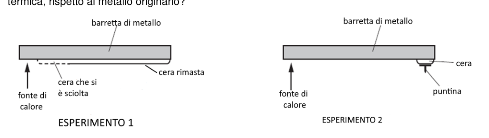
esperimenti conduzione calore barrette metalloTopic: Newtonian Mechanics, Fluid Mechanics, Thermodynamics Metodi: Free-Body Diagram, Energy Conservation Method, Dimensional Analysis Competenze: Physical Reasoning, Graph Linearization, Estimation & Approximation Objects: Rod Fonte: Testo (PDF) — p.2
Question 19.** Two experiments of heat conduction in metals; what happens with metals with higher conductivity (residual wax length / time drop point)? A. The following is the list of the categories of products: The following is the list of the countries of the European Union: The following is the list of the categories of products: Minor/major
experiments on heat conduction metal bars
Topic: Newtonian Mechanics, Fluid Mechanics, Thermodynamics Metodi: Free-Body Diagram, Energy Conservation Method, Dimensional Analysis Competenze: Physical Reasoning, Graph Linearization, Estimation & Approximation Objects: Rod Fonte: Testo (PDF) — p.2
Quesito 20. Affermazioni sull’ebollizione: (1) serve energia esterna; (2) l’acqua bolle solo a ; (3) mentre bolle T non cresce. Quali corrette? A. 1,2,3 · B. 1,2 · C. 2,3 · D. solo 3
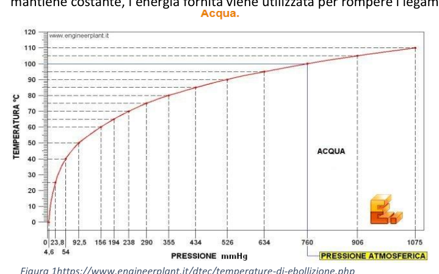
grafico temperatura ebollizione sostanzeTopic: Newtonian Mechanics, Fluid Mechanics, Thermodynamics Metodi: Free-Body Diagram, Energy Conservation Method, Dimensional Analysis Competenze: Physical Reasoning, Graph Linearization, Estimation & Approximation Objects: — Fonte: Testo (PDF) — p.2
Question 20. Statements on boiling: (1) it needs external energy; (2) water only bubbles at ; (3) while T bubbles do not grow. What kind of corrections? A. 1,2,3 · B. 1,2 · C. 2,3 · D. Only three
graph boiling temperature of substances
Topic: Newtonian Mechanics, Fluid Mechanics, Thermodynamics Metodi: Free-Body Diagram, Energy Conservation Method, Dimensional Analysis Competenze: Physical Reasoning, Graph Linearization, Estimation & Approximation Objects: — Fonte: Testo (PDF) — p.2
Quesito 21. Il principio di Archimede: la forza verso l’alto è uguale a: A. massa del fluido spostato · B. peso del fluido spostato · C. volume · D. densità
Topic: Newtonian Mechanics, Fluid Mechanics, Thermodynamics Metodi: Free-Body Diagram, Energy Conservation Method, Dimensional Analysis Competenze: Physical Reasoning, Graph Linearization, Estimation & Approximation Objects: — Fonte: Testo (PDF) — p.2
Question 21. Archimedes’ principle: the force upwards is equal to: A. mass of the fluid displaced · B. weight of the fluid displaced · C. The following table shows the results of the study: density
Topic: Newtonian Mechanics, Fluid Mechanics, Thermodynamics Metodi: Free-Body Diagram, Energy Conservation Method, Dimensional Analysis Competenze: Physical Reasoning, Graph Linearization, Estimation & Approximation Objects: — Fonte: Testo (PDF) — p.2
Quesito 22. “La spinta di Archimede è uguale nei due casi e pari al peso delle due scatole ermetiche”. A quale problema si riferisce? A. due scatole stessa massa e volume (legno/ferro) in acqua · B. due scatole alluminio identiche in olio/acqua · C. alluminio/ferro stesso volume massa diversa · D. due scatole di legno stesso volume, densità e
Topic: Newtonian Mechanics, Fluid Mechanics, Thermodynamics Metodi: Free-Body Diagram, Energy Conservation Method, Dimensional Analysis Competenze: Physical Reasoning, Graph Linearization, Estimation & Approximation Objects: Block Fonte: Testo (PDF) — p.2
Question 22. “The thrust of Archimedes is equal in both cases and equal to the weight of the two hermetic boxes”. What problem is he referring to? A. Two boxes of the same mass and volume (wood/iron) in water · B. two identical aluminium boxes in oil/water · C. Aluminium/iron same volume by mass different · D. Two boxes of wood of the same volume, density and
Topic: Newtonian Mechanics, Fluid Mechanics, Thermodynamics Metodi: Free-Body Diagram, Energy Conservation Method, Dimensional Analysis Competenze: Physical Reasoning, Graph Linearization, Estimation & Approximation Objects: Block Fonte: Testo (PDF) — p.2
Quesito 23. Quali affermazioni si attribuiscono ai gas? (1) non hanno volume né forma definiti; (2) altamente comprimibili. A. solo 1 · B. solo 2 · C. entrambe · D. nessuna
Topic: Newtonian Mechanics, Fluid Mechanics, Thermodynamics Metodi: Free-Body Diagram, Energy Conservation Method, Dimensional Analysis Competenze: Physical Reasoning, Graph Linearization, Estimation & Approximation Objects: Gas Fonte: Testo (PDF) — p.2
Question 23. What statements are attributed to gases? (1) have no defined volume or shape; (2) are highly compressible. A. only 1 · B. only 2 · C. both · D. No one
Topic: Newtonian Mechanics, Fluid Mechanics, Thermodynamics Metodi: Free-Body Diagram, Energy Conservation Method, Dimensional Analysis Competenze: Physical Reasoning, Graph Linearization, Estimation & Approximation Objects: Gas Fonte: Testo (PDF) — p.2
Quesito 24. Due bombole di pari volume riempite di idrogeno e ossigeno, stessa pressione e temperatura. Affermazione corretta? A. più molecole di ossigeno · B. meno di ossigeno · C. numero uguale · D. non determinabile
Topic: Newtonian Mechanics, Fluid Mechanics, Thermodynamics Metodi: Free-Body Diagram, Energy Conservation Method, Dimensional Analysis Competenze: Physical Reasoning, Graph Linearization, Estimation & Approximation Objects: Gas, Cylinder Fonte: Testo (PDF) — p.2
Question 24. Two jars of equal volume filled with hydrogen and oxygen, the same pressure and temperature. Is that correct? A. more oxygen molecules · B. Less oxygen · C. number of equal points · D. Not determinable
Topic: Newtonian Mechanics, Fluid Mechanics, Thermodynamics Metodi: Free-Body Diagram, Energy Conservation Method, Dimensional Analysis Competenze: Physical Reasoning, Graph Linearization, Estimation & Approximation Objects: Gas, Cylinder Fonte: Testo (PDF) — p.2
Quesito 25. Tre disegni di fronti d’onda in un liquido. Quali fenomeni? (1/2/3) A. riflessione/rifrazione/diffrazione · B. riflessione/diffrazione/rifrazione · C. rifrazione/riflessione/diffrazione · D. diffrazione/riflessione/rifrazione
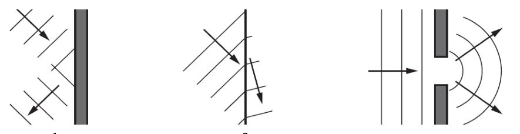
fronti d’onda riflessione rifrazione diffrazione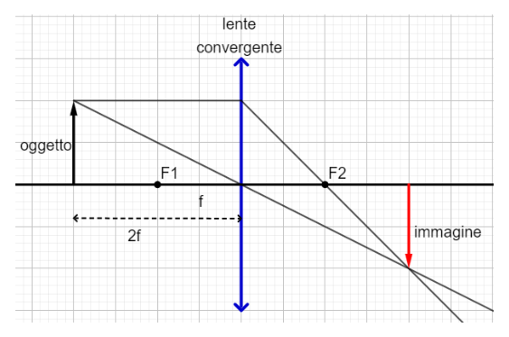
soluzione: fronti onda riflessione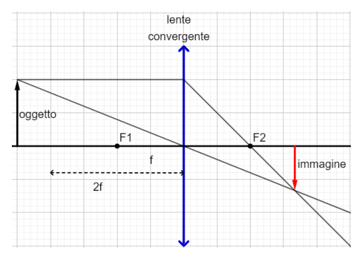
soluzione: fronti onda rifrazione diffrazioneTopic: Newtonian Mechanics, Fluid Mechanics, Thermodynamics Metodi: Free-Body Diagram, Energy Conservation Method, Dimensional Analysis Competenze: Physical Reasoning, Graph Linearization, Estimation & Approximation Objects: — Fonte: Testo (PDF) — p.2
Question 25. Three wavefront drawings in a liquid. What phenomena? (1/2/3) A. The following shall be added to the list of the following: The following shall be added to the list of the following: The following conditions shall apply: The following shall be added to the list of the following: The following is a list of the types of radiation used in the manufacture of radiation:
The solution: reflection wavefronts
The solution is wave front refraction diffraction
Topic: Newtonian Mechanics, Fluid Mechanics, Thermodynamics Metodi: Free-Body Diagram, Energy Conservation Method, Dimensional Analysis Competenze: Physical Reasoning, Graph Linearization, Estimation & Approximation Objects: — Fonte: Testo (PDF) — p.2
Quesito 26. Oggetto davanti a lente convergente a distanza maggiore del fuoco. L’immagine è: A. ingrandita · B. rimpicciolita · C. stesse dimensioni · D. tutte e tre possibili
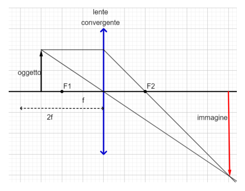
soluzione: lente convergente immagine oggettoTopic: Newtonian Mechanics, Fluid Mechanics, Thermodynamics Metodi: Free-Body Diagram, Energy Conservation Method, Dimensional Analysis Competenze: Physical Reasoning, Graph Linearization, Estimation & Approximation Objects: Lens Fonte: Testo (PDF) — p.2
Question 26. Objects in front of a convergent lens at greater distance from the fire. The image is A. Enlarged · B. The following table shows the results of the calculations: The same dimensions · D. All three possible
The following table shows the results of the calculation of the total value of the input data:
Topic: Newtonian Mechanics, Fluid Mechanics, Thermodynamics Metodi: Free-Body Diagram, Energy Conservation Method, Dimensional Analysis Competenze: Physical Reasoning, Graph Linearization, Estimation & Approximation Objects: Lens Fonte: Testo (PDF) — p.2
Quesito 27. (Comprensione testo) Galassia Gz9p3 osservata da JWST (redshift ). Quali presupposti dello studio sono disattesi dall’osservazione? A. galassie con stesso redshift tutte uguali · B. i modelli predicono massa e luminosità medie secondo l’età · C. più alto il redshift più alta la luminosità · D. in epoche lontane non avveniva formazione di galassie
Topic: Newtonian Mechanics, Fluid Mechanics, Thermodynamics Metodi: Free-Body Diagram, Energy Conservation Method, Dimensional Analysis Competenze: Physical Reasoning, Graph Linearization, Estimation & Approximation Objects: — Fonte: Testo (PDF) — p.2
Question 27. (Text understanding) Galaxy Gz9p3 as observed by JWST (redshift ). What assumptions of the study are disregarded by the observation? A. galaxies with the same redshift all equal · B. The models predict average mass and luminosity by age · C. The higher the redshift the higher the brightness · D. In distant times , there was no galaxy formation .
Topic: Newtonian Mechanics, Fluid Mechanics, Thermodynamics Metodi: Free-Body Diagram, Energy Conservation Method, Dimensional Analysis Competenze: Physical Reasoning, Graph Linearization, Estimation & Approximation Objects: — Fonte: Testo (PDF) — p.2
Discesa con il paracadute (problema 1x3)
Quesito a risposta aperta (quesiti 28-30, punti).
Un paracadutista si lascia cadere da un aereo in volo orizzontale a velocità costante. Il diagramma mostra l’andamento della componente verticale della sua velocità (verso positivo verso il basso; densità dell’aria costante durante la discesa).
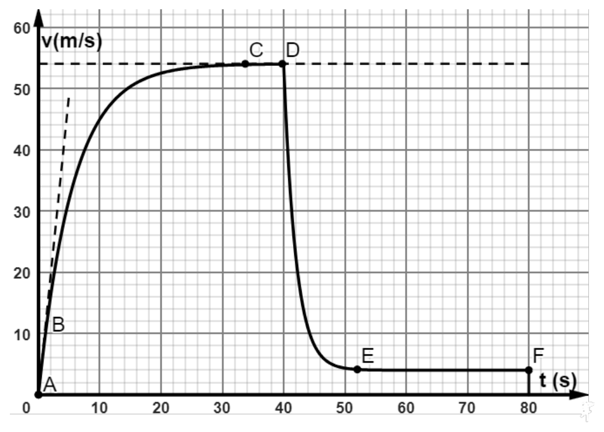
grafico velocità verticale paracadutista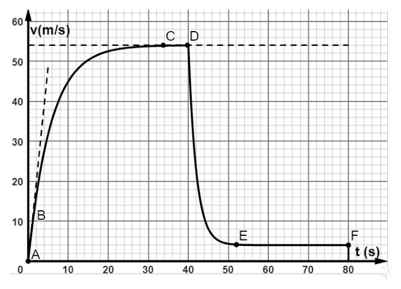
soluzione: grafico v-t paracadutista annotatoa) Descrivi il moto nei tratti AB e CD e determina l’accelerazione nei due tratti. b) In quale dei due tratti l’attrito con l’aria è trascurabile? Spiega. c) In quale istante dal lancio si è aperto il paracadute? d) Da quale altezza (approssimativamente) si è lanciato il paracadutista? e) Fai uno schizzo approssimativo dell’accelerazione del paracadutista dall’istante del lancio fino a terra.
Topic: Newtonian Mechanics Metodi: Free-Body Diagram, Kinematic Equations, Experimental Data Analysis Competenze: Graph Linearization, Experimental Data Analysis, Physical Reasoning Objects: Projectile Fonte: Testo (PDF) — p.13
**Descent by parachute (problem 1x3) **
Quesito a risposta aperta (quesiti 28-30, punti).
A parachute falls from a plane in a steady-speed horizontal flight. The diagram shows the direction of the vertical component of its velocity (positive downward direction; constant air density during descent). I’m going to start with this. grafico velocità verticale paracadutista
soluzione: grafico v-t paracadutista annotato
**a) ** Describe the motion in tracts AB and CD and determine the acceleration in both tracts. **b) ** In which of the two areas is air friction negligible? - Explain that. **c) ** At what moment of launch did the parachute open? **d) ** From what altitude (approximately) did the parachutist launch? e) Fai uno schizzo approssimativo dell’accelerazione del paracadutista dall’istante del lancio fino a terra.
Topic: Newtonian Mechanics Metodi: Free-Body Diagram, Kinematic Equations, Experimental Data Analysis Competenze: Graph Linearization, Experimental Data Analysis, Physical Reasoning Objects: Projectile Fonte: Testo (PDF) — p.13